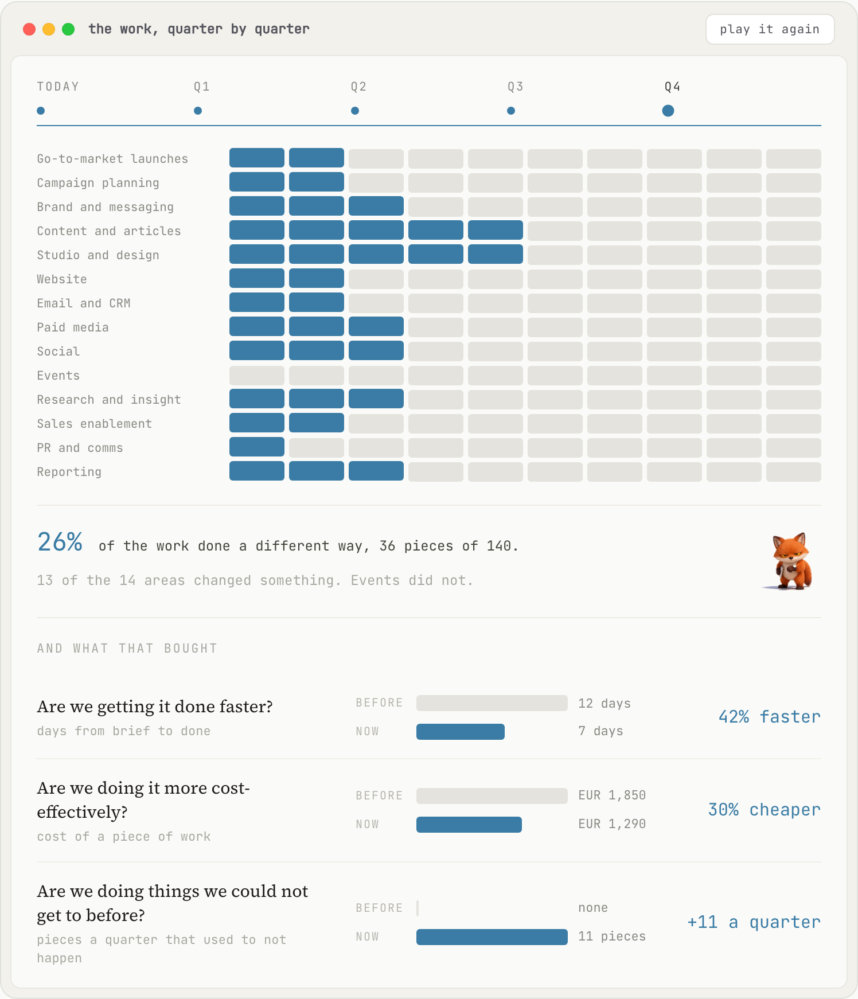
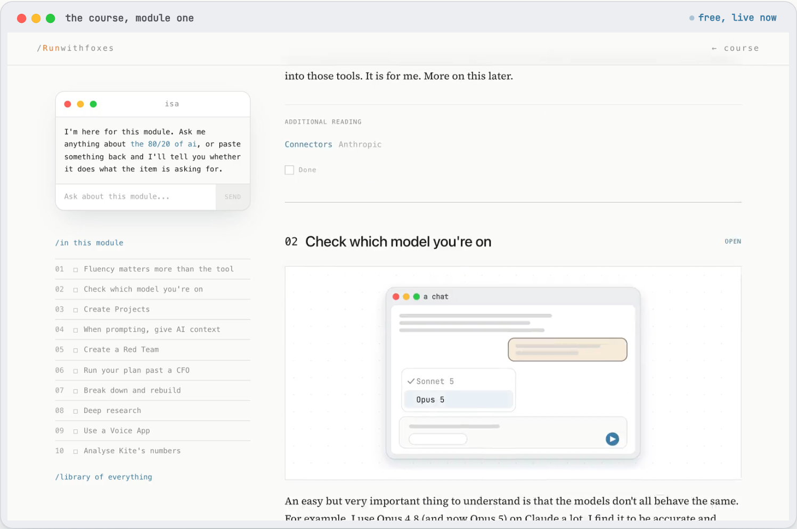
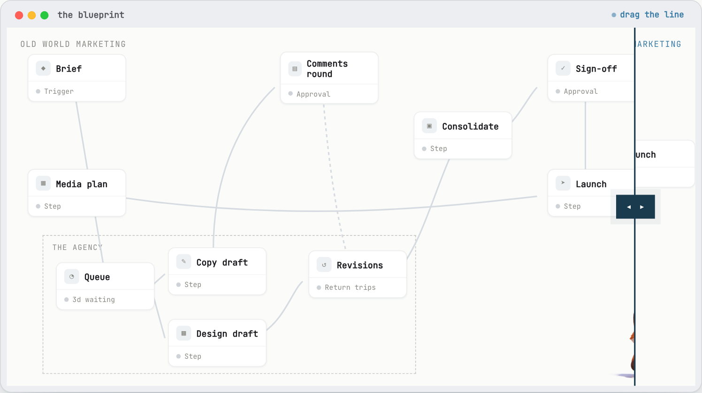
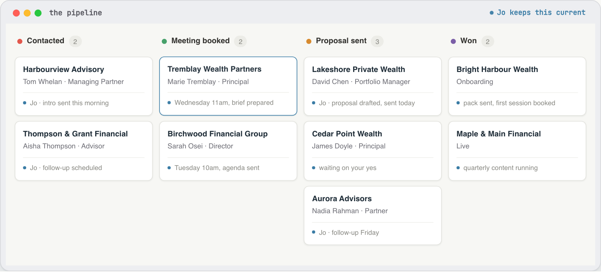
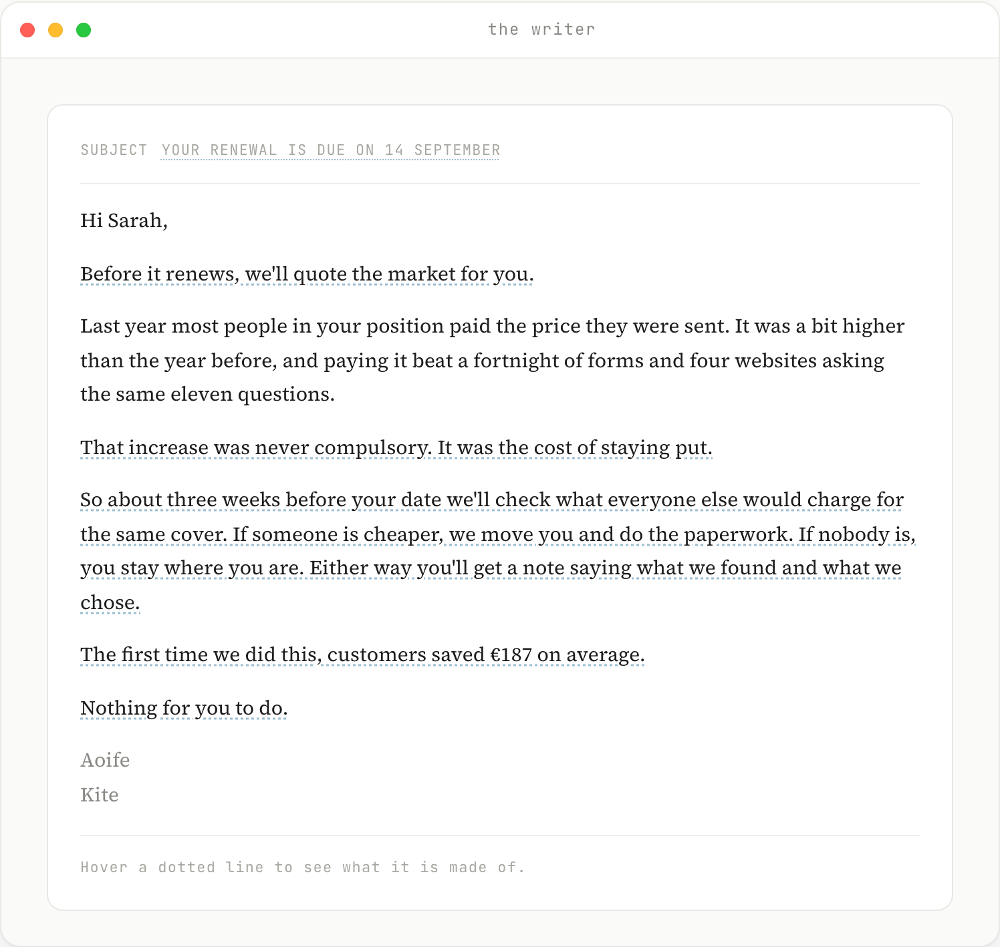
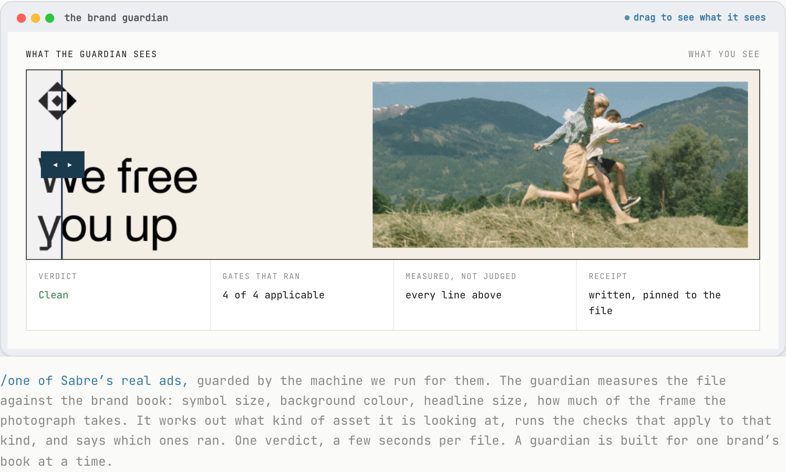
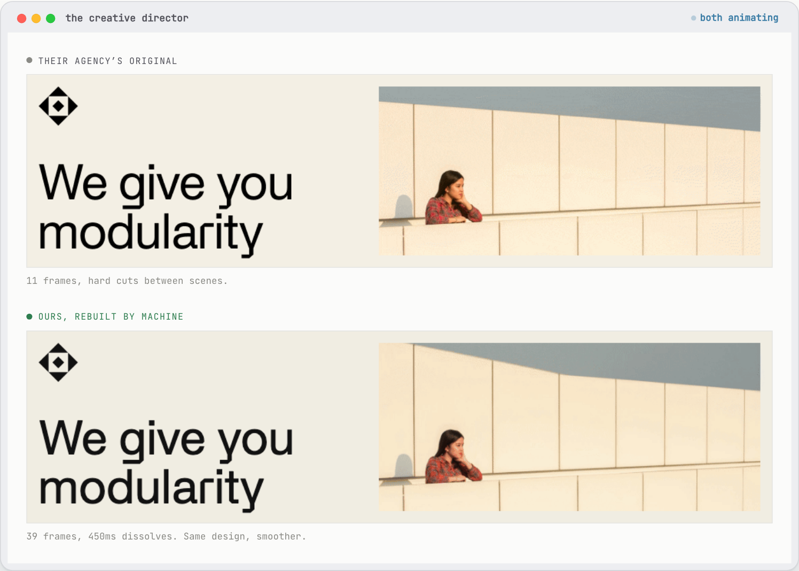

/Runwithfoxes
You asked what changing the way the team works would actually involve. This page is that: a snapshot of the work and how we do it. I have focused on the areas I think matter most for a marketing team like yours, at fourteen people across three lines of business: how roles and structures are going to change, how a whole team adopts AI, how you measure whether it is working, and the agents we build.
Before I build anything, I ask one question: what does really good look like here? Not what AI can do, but what the best version of this marketing would be, and the level of quality and effectiveness I would want to stand over.
So I start where I always have. If there were no AI at all, what team would I hire to do this properly? I map that team first, the one I would build in a world before any of this existed.
Then I build exactly that, with agents instead of hires. The quality bar is set by the team I would have wanted, not by whatever a tool happens to make easy. Twenty years in brand is what tells me where that bar sits: Head of Brand at O2 Ireland, then CMO at the National Lottery, Head of Brand at Indeed and Miro, both global roles. Positioning, messaging and tone written first, then built into everything the agents make.
Ireland’s Marketer of the Year, 2022 · Who I work with: Moloco, Heineken, Norcros, Alltech, Smurfit, Hostelworld, Eaton Square, Weatherbys
“His command of marketing science as well as his instincts for great thinking and ideas are, in my opinion, superb.”
Peter Field, The Godfather of Effectiveness, author of The Long and the Short of It
“Paul reported into me as Head of Brand when I was at Indeed. I have learned more from him than anyone else in my career.”
Paul D’Arcy, CMO, Moloco. Former CMO at Miro and Indeed
I firmly believe that marketing structures, marketing teams and marketing roles are going to change dramatically in the next few years, and the work we do is all around that. Specifically, there are four buckets to what we currently do. We train teams. We build AI agents and capabilities for them, or with them. We work with marketing leaders to re-imagine what future workflows could look like, and we design AI adoption programmes for them.
Individual productivity gets you started. Make everyone on a team a little faster and the work still queues in the same places, because the bottleneck just moves down the line. The process, the people and the policies have to change together, and that starts with what each role actually is.
We start by laying out the work to be done, not the team chart. Then we redesign how that work gets done and remove the handovers.
Not everybody is going to be a builder, and that is fine. I suspect every marketing team will soon have at least one person who builds, and who helps the other teams with their work. What we measure is simple: pieces of work that are now done a different way, not logins or prompt counts.

/on the page this plays. Every block is a piece of work; the run shows four quarters of a team changing how it works, area by area, with what that bought underneath.
Firstly, there is a free course, AI Fluency for Ambitious Marketers, for anybody on your team. We also run training sessions for marketing, sales and go-to-market teams. These range from half a day to full-week sessions. We cover a range of topics, from pure productivity hacks to building agents and systems. System thinking is a core skill for marketing in an AI world.

/the course, module one. Free and live now at runwithfoxes.com/course.
Redesigning workflows is the harder work, and it is what my new book is about. It is harder not because of the tech or the tools, but because it is about people: their roles, their responsibilities, and sometimes their identities. We map out the activities and how they flow, from a brief through to campaigns and analysis, including the handovers, the time each step takes, the documents and artefacts created, the tools used, and the sign-offs. Then we re-imagine what is possible, both now and in the very near future, starting from a blank page. This is my core skill, as it is what I did building teams client-side for most of my career.

/on the page you drag the line. One window, two worlds: a marketing function as it usually runs, handovers and all, and the same function with AI.
We build Growth Agents for teams. The growth agent does a few things. It is the single point of contact for updating and tracking the pipeline. For example, it opens the dashboard daily for it and the marketer to review together. It does analysis to help uncover blockers.
And most importantly, it runs the outbound campaigns, be that email or LinkedIn, running all the steps from list building to writing the messages, sending and analysis.

/illustrative. On the page the cards move stage to stage, the morning note types itself out, and a campaign runs through. Every firm and person is invented. Nothing sends until someone on your team says go.
I read a lot about how AI writes slop. It does. But it doesn’t have to. If you spend time up front. Writers need to know your brand’s positioning, your target audience, insights or pain points related to your category. They need to know your brand’s messaging, and your tone of voice. On top of that, we need to articulate instructions on how we want the writer to interact with us or our colleagues.
That knowledge is a small folder of documents. Here is what comes out of it, worked through on Kite’s own voice.

/on the page this writes itself out, and hovering a dotted line shows which brand document that line came from: the positioning, the messaging, an approved proof point, the voice.
One of our most recent products is a Brand Guardian. In seconds, it checks whether new work is on or off-brand, looking at hex colours, pixels, copy and photography, and measuring against your brand book rather than judging by eye. It’s probably our most complex agent, and still in beta, but I’m very proud of it.

/on the page you drag the line to see what the guardian sees.

/real Sabre work. The page carries the full set, including the photo to video and the range of stills.
Starting with the big companies, and with the one I did from the inside, running the teams rather than advising them.
Miro
150 marketers · brand strategy, advertising, marketing communications, the studio
We were spending about $1.2 million on design and studio work. When I realised what was possible I set a target to reduce it by 20%, and that 20% was the low hanging fruit, the low skill design work.
It took a combination of things. AI to make the images, the video and the copy. A training structure and a training programme. Extra Canva licences. And changes to the brand guidelines and the policies, so that people who were not marketers could serve themselves and move with speed, while keeping everything consistent across the work.
$1.2m spent on design and studio work → $240k taken out, inside a year
Moloco
50 to 60 marketers
They wanted to hire a copywriter. I persuaded them to let me build copywriters in AI instead, and they use them all the time.
The part that matters is what goes into one. A copywriter is built with the positioning, the messaging framework, the pain points and the proof points. That is what makes what comes out usable rather than generic.
I am also building them a brand guardian, and an AI identity generator, which takes all the elements of their brand identity and reproduces them at speed.
Sabre
AI adoption programme, marketing first
I have been building capabilities for Sabre, and I now work alongside their champion inside the marketing team, their marketing director. A combination of him on the inside and me on the outside.
Together we have designed an AI adoption programme for marketing, which we are rolling out now and will extend into go to market.
Alongside the programme I have built them writers, brand guardians, a search agent, a brief coach to improve the quality of their briefs, and an advertising creative role.
Option B. Start by laying out the work the team actually does, area by area, so training aims at the jobs worth changing rather than running as one workshop for everyone. Build the brand pack at the same time, the small set of documents every agent and every person writes from, which is what holds three lines of business to one voice as the volume goes up. Then redesign one workflow at a time with the people who run it, and report the change monthly so the return is visible while it is happening.
Option A is the same first step without the programme around it, and it is the right choice if you would rather see one capability working before committing further. Option C is the whole system across all three lines of business, which is worth doing once the first workflows have proved out.
Option A
The first measure and a first capability
EUR 12,500 plus VAT
Four weeks. Tool subscriptions are Kite’s own.
Option B
The adoption programme
EUR 5,500 a month
Six months, plus VAT. Tool subscriptions are Kite’s own.
Option C
The whole marketing system
EUR 14,000 a month
Twelve months, plus VAT. Tool subscriptions are Kite’s own.
What the price covers
What it doesn’t
Run with Foxes · Private, prepared for Kite Insurance. The live version of this document, with every exhibit running, is the page this was printed from.